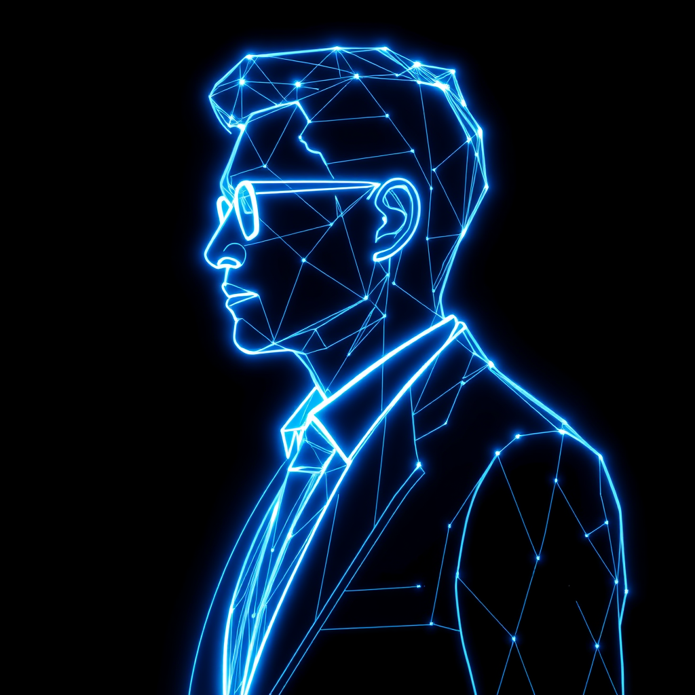

TenthChair is the always-on AI director — sworn to the founder's side of the table. Permanent memory, every ritual, every KPI, every intro. And when it's time to raise, it pitches investors on your behalf — briefed on your numbers, not just your deck.
Today's board stack splits into three boxes that don't talk to each other — and none of them actually sit on your board.
Diligent, OnBoard, BoardEffect. Built for Fortune 500 audit committees. PDFs, e-signatures, minutes. Zero judgment.
Zeck, Boardable, Boardroom. Replace the printed deck. Still nothing between meetings. Still no memory of last quarter's promise.
Memory of every decision. Eyes on every KPI. Voice in every room. The 10th chair your seed/Series A board never had.
Six things a good board member actually does. We do all six — at the cadence of your operating rhythm, not their calendar.
Every decision, commitment, metric and disagreement — indexed and recallable. "Last September you promised the board CAC under $400. It's $612. What's the plan?"
Quarterly board agenda, pre-reads, action items, follow-ups, minutes. No more Friday-night scrambles. The ritual runs whether you're on it or not.
Plugs into Stripe, HubSpot, Mixpanel, your finance stack. Tracks the metrics your board actually cares about — and flags drift before the next meeting, not after.
Profiles each director's actual edge — networks, expertise, time. Routes asks so your investor opens the enterprise door, your domain advisor closes the hire, your operator-angel fixes the funnel. No director coasts.
Your chair carries a curated rolodex of operators, angels and adjacent founders. Hit a wall — "need a design partner in fintech," "who's seen this pricing problem?" — it surfaces 2–3 names with context and offers the intro. You approve. No spam, no auto-sends.
Empty seat? Wrong fit? Your chair scouts vetted candidates against the actual gap on your board, runs the intros, onboards them with their own brief, and tracks what each new director actually delivers.
A generic pitch bot pitches like a cold deck. TenthChair pitches with everything it already knows — your numbers, your board minutes, every commitment you've made and kept. Async, structured, partner-grade. Founder-side, always.
~30 minutes to onboard. Runs in the background. Shows up when it matters.
Plug in your data room, KPI sources (Stripe, HubSpot, Posthog), calendar and Slack/email. Past board decks become long-term memory. First-time founders: import directly from Clerky, Stripe Atlas or Carta Launch the day you incorporate.
TenthChair watches the metrics between meetings, drafts the agenda, surfaces what your board will ask, and chases follow-ups from the last session.
At the meeting it speaks. Asks the tough question. Holds each director to what they signed up to deliver. Writes the minutes. Files the next-step list — yours and theirs.
Founders who took venture money, took board seats, and discovered the board is half oversight, half theatre, mostly silent for 89 days out of 90.
Four tiers. One enters at the moment you incorporate. One raises your next round. Pay in cash, equity, or success fee — your call.
Pre-seed and seed founders can take TenthChair as a real advisor instead of a monthly subscription: 0.25% common stock, 2-year vest, 1-month cliff — standard FAST advisor terms, same paperwork your human advisors already use.
If we're genuinely a director, we should own the same kind of slice a director does. We win when you win — and we stay founder-side, because that's whose cap table we're on.
Day Zero is our distribution wedge — onboard the day you incorporate via Clerky / Atlas / Carta Launch. Capital is our compounding wedge — every round we close trains the rail and earns the next intro.
Private beta, ~50 founders, opens Q3 2026. Tell us what your board is missing — we'll be in touch within 48 hours.
team@tenuity.tech →